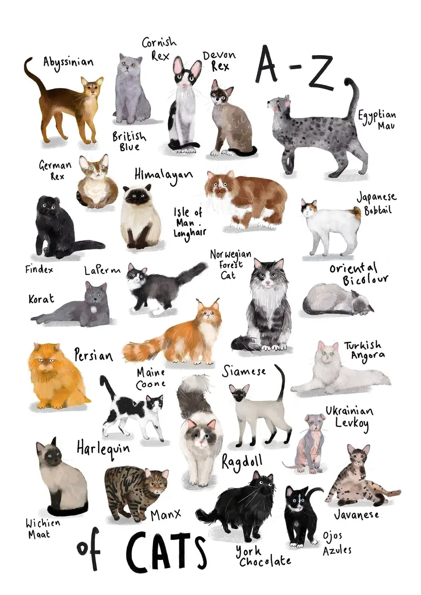
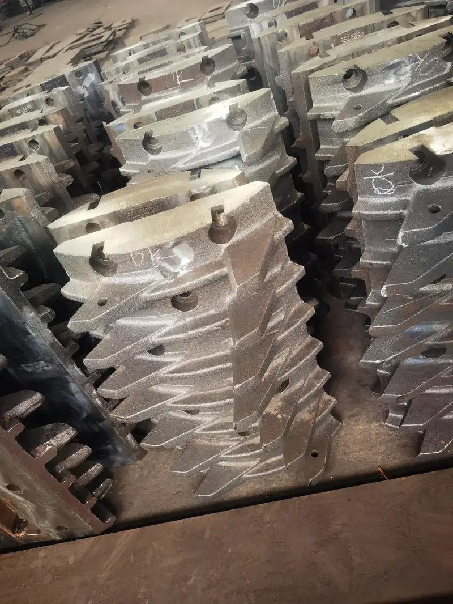
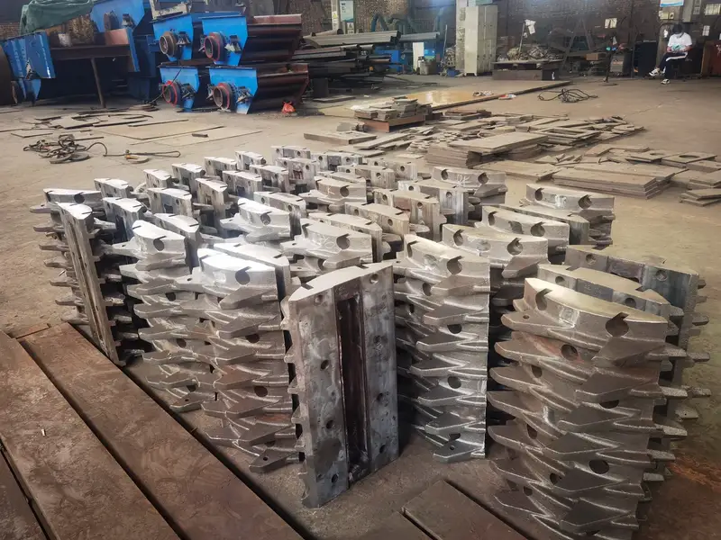
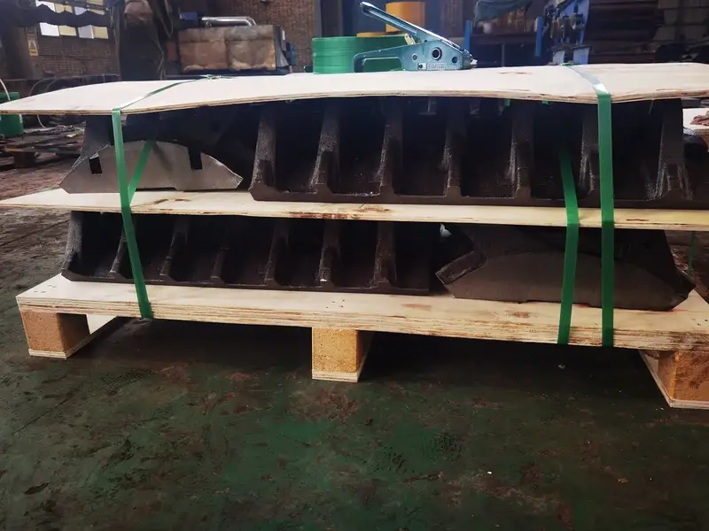
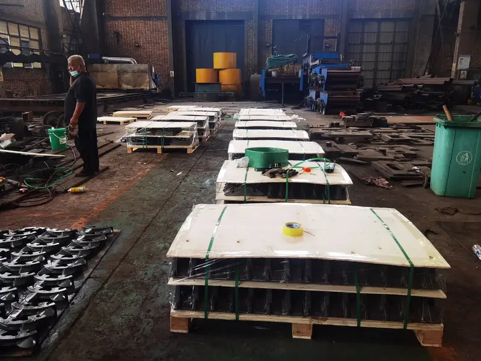

Overview
Technical Specs
Детали
ThyssenKrupp
HPGR POLYCOM
POLYCOM ThyssenKrupp — ведущий HPGR для энергоэффективного измельчения. Удельное давление до 8,5 Н/мм², степень дробления до 10:1 за один проход. Anranst — вольфрамокарбидные штыри и сегменты.
Typical Applications
Factory
Галерея производства — Цех Anranst






.webp)
Technical Data
HPGR POLYCOM — Модели
| Модели | Детали |
|---|---|
| Диаметр валков | Various (custom) |
| Ширина валков | Up to 2,800mm |
| Размер питания | Up to 60mm |
| Размер продукта | P80 < 7mm |
| Удельная энергия | 0.8-2.5 kWh/t |
| Модели | DRS 800, DRS 660 |
| Модели | nimo 40c, HRC58 |
| Твёрдость | 45--52hrc |
| Модели | ZGMn 18C, ZGMn 13R, ZGMn 13C |
| Модели | DRS 660, DRS 800 |
| Модели | DRS 660, DRS 1000, DRS500 |
Детали
Бандажи: центробежно-литая сталь со штифтами из вольфрамового карбида (Ø16-30mm). Штифты: WC-Co твёрдый сплав. Основание: кованая или литая сталь.
Детали
HPGR POLYCOM Детали
Модели
Various
Детали
Бандажи, штифты
Бандаж ролика / сегмент
Поверхность ролика с давлением до 350 бар; штифты WC создают автогенный слой
WC-Co Cemented CarbideISO K20-K40 / YG11C-YG15C
ТвёрдостьHRA 86-90
Вязкость≥ 1800 N·mm
Прочность≥ 2000 MPa
Текучесть—
| Grade | WC | Co | Other |
|---|---|---|---|
| WC-Co Cemented Carbide | 84-89% | 11-16% | ≤1% |
Экстремальная твёрдость для штифтов HPGR и роторов VSI; срок службы в 5-10 раз дольше Cr26
Hardfacing Overlay (Cr-C)Cored wire overlay / WC + Cr-C composite
ТвёрдостьHRC 60-68 (overlay layer)
ВязкостьAKV ≥ 30J (base metal)
Прочность≥ 600 MPa (base)
Текучесть≥ 350 MPa (base)
| Grade | C | Cr | Nb | W | Fe |
|---|---|---|---|---|---|
| Hardfacing Overlay (Cr-C) | 3.0-5.5 | 20.0-35.0 | 4.0-8.0 | 0-10.0 | Balance |
Наплавка на стальную основу; можно повторно наплавлять 3-5 раз; экономичное решение для VRM
Боковая плита
Предотвращает выдавливание материала по краям ролика
Cr-Mo Alloy SteelASTM A217 WC6/WC9 / GB ZG15CrMo
ТвёрдостьHRC 42-52
ВязкостьAKV ≥ 25J
Прочность≥ 750 MPa
Текучесть≥ 550 MPa
| Grade | C | Si | Mn | Cr | Mo | Ni |
|---|---|---|---|---|---|---|
| Cr-Mo Alloy Steel | 0.15-0.25 | 0.30-0.60 | 0.50-0.80 | 1.00-1.50 | 0.45-0.65 | — |
Хорошее сочетание твёрдости и вязкости; для футеровки SAG-мельниц и решёток
Штырь / вставка
Вольфрамокарбидные штыри Polycom для автогенной защиты валков
Cr26ASTM A532 Class III Type A / GB KmTBCr26
ТвёрдостьHRC 60-65
ВязкостьAKV ≥ 8J
Прочность≥ 550 MPa
Текучесть—
| Grade | C | Si | Mn | Cr | Mo |
|---|---|---|---|---|---|
| Cr26 | 2.0-3.3 | ≤1.2 | ≤1.5 | 23.0-30.0 | ≤2.0 |
Максимальная твёрдость для абразивного износа; мелкое дробление и помол
Почему Anranst
- Премиальные штифты WC-Co HRA 88-90 для Polycom 17/10-10 - 24/16; срок службы 8-12 мес.
- Наплавочные бандажи: повторная наплавка 3-5 раз, стоимость за тонну на 40% ниже
- Полное покрытие Polycom: 12/8 - 24/16